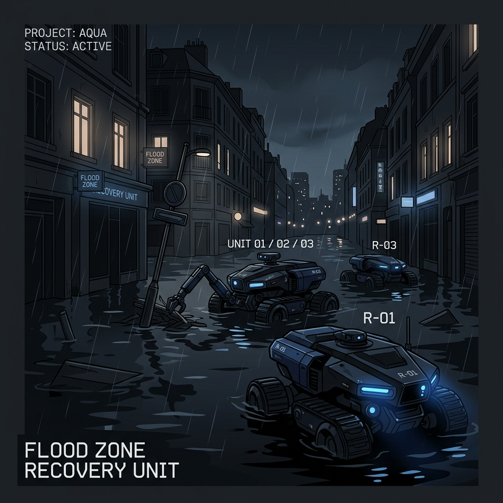
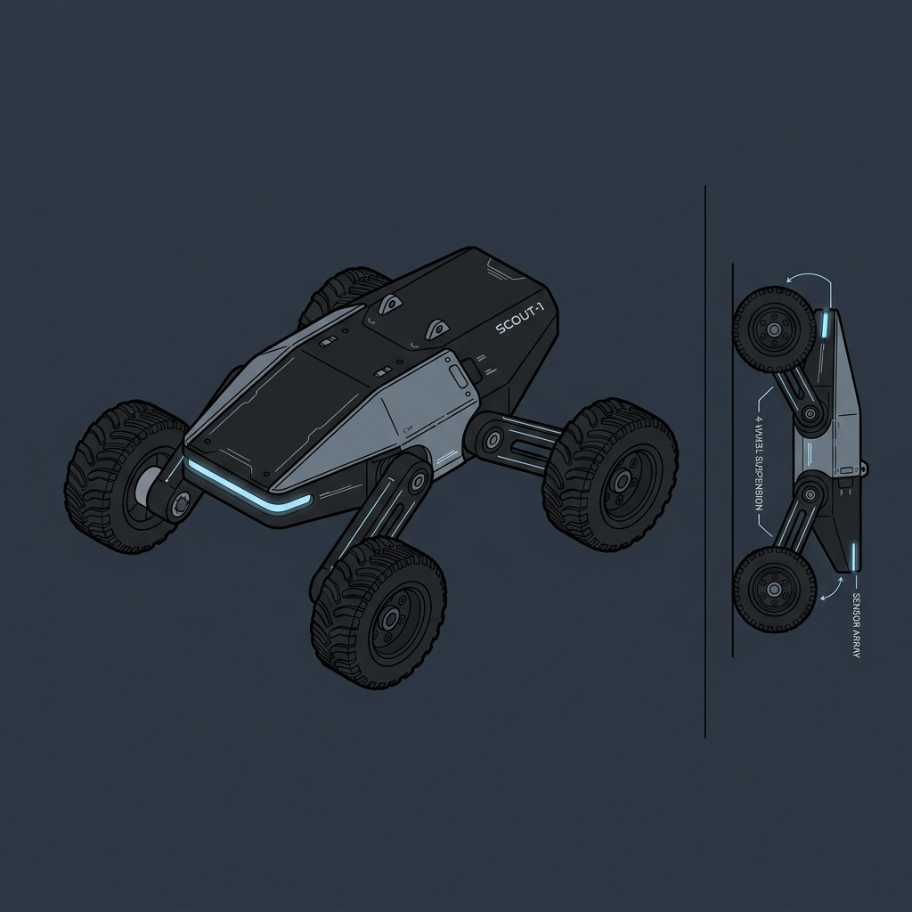
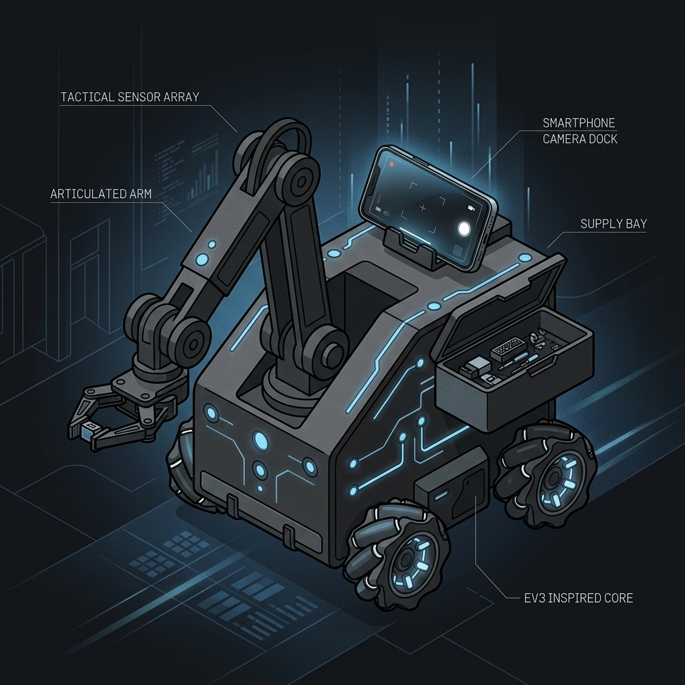
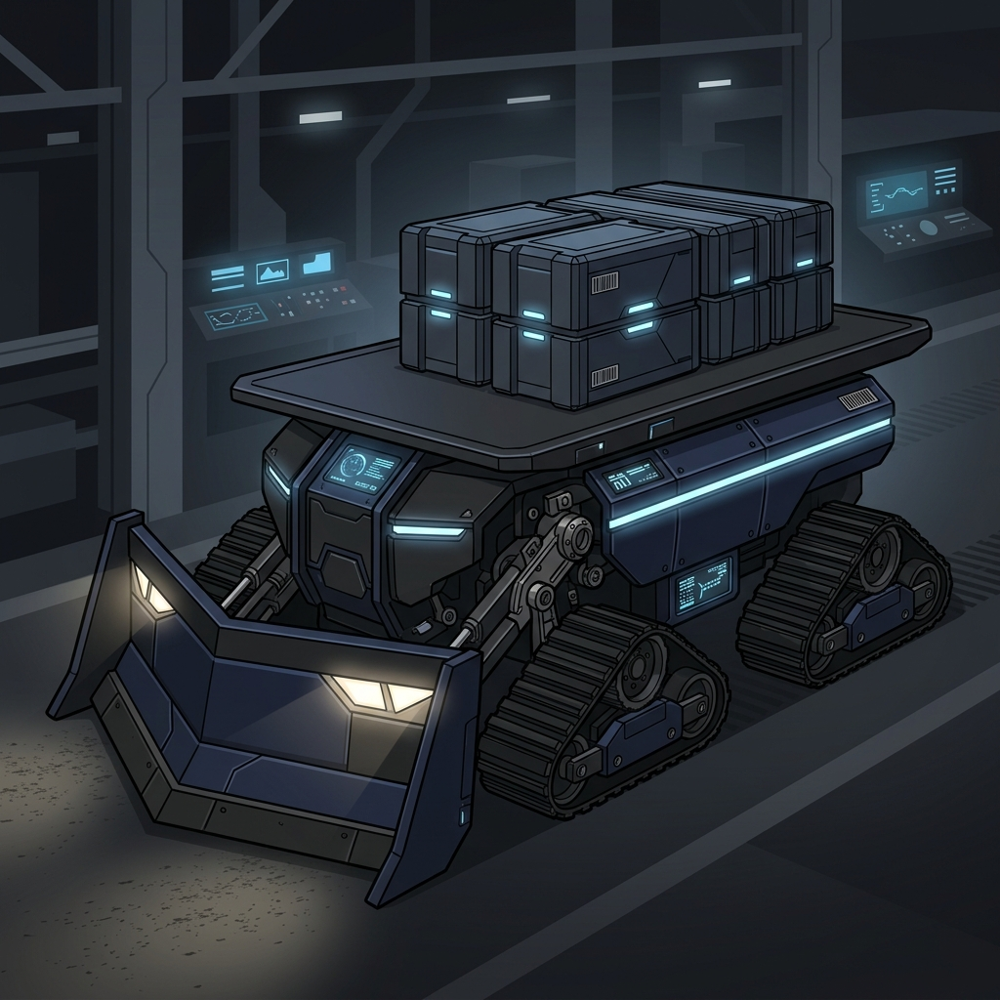

NEX.Sentinel
Smarter Robots. Faster Rescue.
A coordinated multi-robot disaster response ecosystem designed for flood reconnaissance, obstacle removal, emergency supply delivery, and automated tactical routing.

See First.
NEX.Vector probes deep into flooded environments. Utilizing an ultra-agile platform, it maps paths, detects blockages, and relays live telemetry before heavier units enter the zone.
Think First.
NEX.Core coordinates operations. Outfitted with an articulated robotic arm and a smartphone dual-camera sensor array, it parses the disaster theater and manages cargo distribution routes.
Act First.
NEX.Rescue clears paths and delivers aid. Combining high-torque track systems with heavy front plows, it moves debris out of rescue paths to secure logistic flow.
Together, they become
NEX.SentinelA perfectly unified, intelligent disaster response network that automates emergency mitigation, combining agile scout data and command node calculations with robust logistic payloads.



Cooperative Systems vs. Monolithic Robotics
Modern disaster sites are dynamic, unstable, and highly unpredictable. Ramped supply distribution, obstacle clearance, and structural reconnaissance are too complex for a single heavy machine.
Reconnaissance
Deploying small, low-mass sensors to map entry paths, measure local flood levels, and locate safe approach routes.
Mission Coordination
Distributing task cues, managing wireless node channels, and adjusting path layouts dynamically based on sensor inputs.
Emergency Supply Delivery
Handling and staging medical modules, water rations, and power cells through dedicated logistics beds.
Obstacle Removal
High-torque traction systems that plow through blocking structures or load obstruction tiles out of transit columns.
Environmental Awareness
Acquiring visual data feeds and ultrasonic telemetry to map real-time structural profiles of water sectors.
NEX.Sentinel is an educational systems engineering prototype designed for flood-rescue simulations. Utilizing specialized robot hardware (LEGO EV3, WeDo, customized sensors) and routing coordination, it models full-scale disaster logistics, distributed processing, and local networking principles.
Systems Architecture Flow
Our multi-node routing maps instruction lines from human input down to physical actuators in the disaster zone.
The Robotics Fleet
Hover over and select a node to review its system schematics, architecture blueprints, performance boundaries, and disaster-response protocols.
NEX.Vector
Reconnaissance UnitRapid scout designed for flood water depth verification, obstacle spotting, and path scouting.
NEX.Core
Mission Command UnitCentral workspace rover with a motorized robotic gripper, integrated phone cam feed, and mission queue.
NEX.Rescue
Emergency Logistics UnitHeavy utility crawler configured for supply carrying, debris recovery, and trail stabilization support.
Systems Engineering Exhibition
NEX.Sentinel represents a complete workflow integration from conceptual layouts to physically operating disaster response rovers.
Designed around modularity, the project addresses three foundational components of emergency logistics: real-time local network building, specialized platform division, and coordinate pathing dynamics. Rather than assembling a singular robot trying to encompass all mechanisms, we distribute tasks among small, highly structured platforms working together under a unified operator coordinate structure.
Through detailed subsystem testing—including Bluetooth communication ranges, motor torque calibrations, debris clearance limits, and live sensor streaming stability—the Sentinel project proves the efficacy of coordinated swarm robotics in disaster domains.